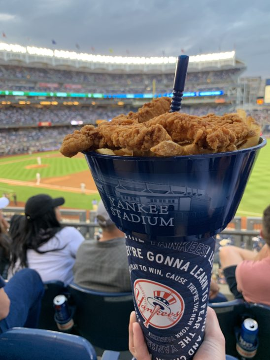
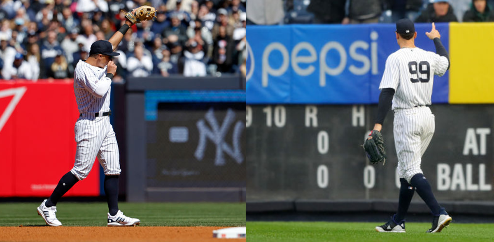

Yankees Stadium is located in the Bronx, New York City. The best way to get there is by subway. Take the 4, B, or D train to 161st Street - Yankee Stadium station.
Getting to the Stadium
Food and Drinks
If you plan to drive, be aware that parking can be expensive and limited. It's recommended to use public transportation or carpool with friends.

The Gameday Atmosphere
Make sure to bring your tickets, a valid ID, and some cash for food and merchandise. Don't forget to wear your Yankees gear!
